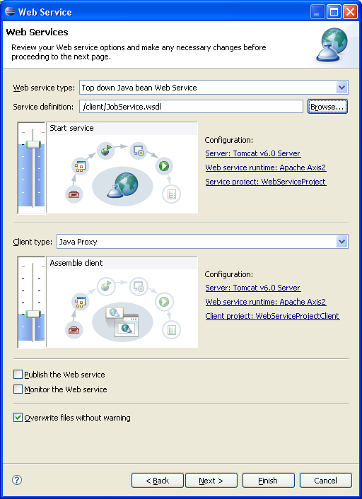
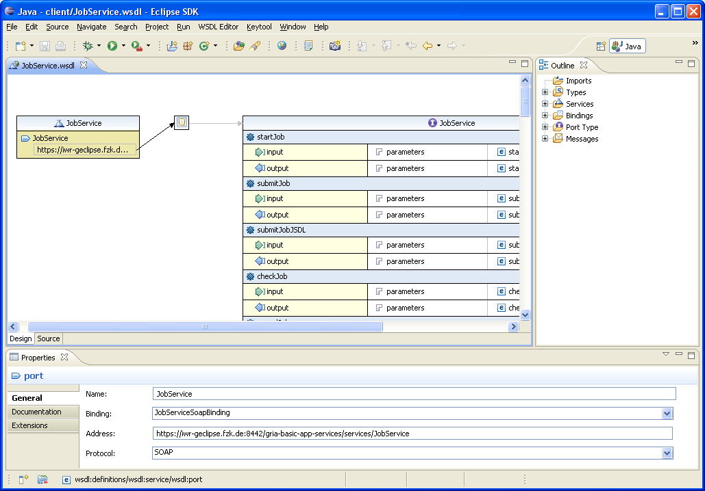
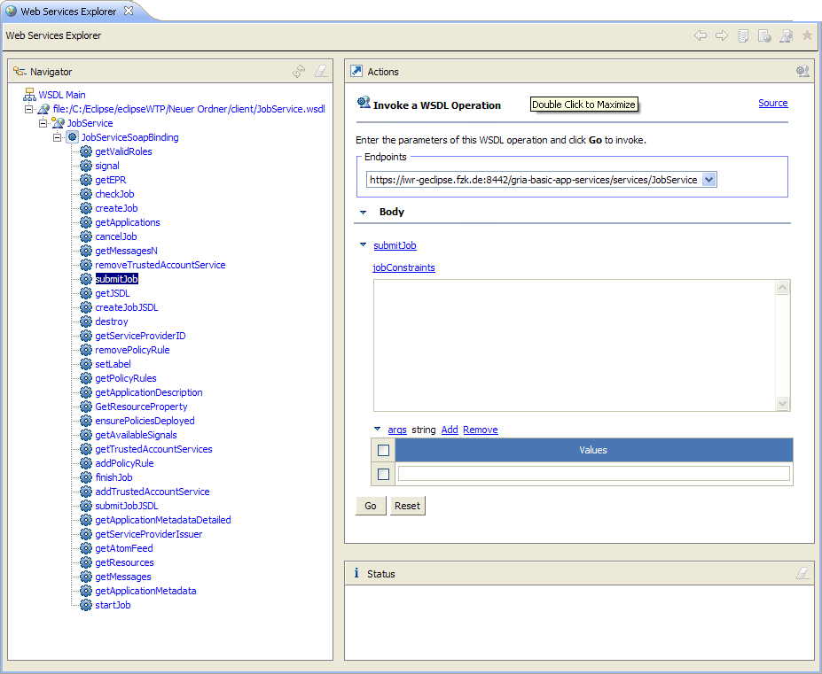

With the Web Tools Platform (WTP) Project, there already exists an Eclipse top-level project providing tools for Web technologies. This generic and standards-based platform allows, among other things, to produce and consume Web services.
| It offers code generating Web service wizards for creating server-side skeletons and client-side proxies. The web services can be created bottom up from a Java class or top down based on a Web Service Description Language (WSDL) file. |  |
The WTP also offers a graphical WSDL editor.

Furthermore, WTP provides the Web Service Explorer, a tool enabling to conveniently test Web services by allowing to invoke operations without generating code.

More information and tutorials can be found at the WTP community page or the documentation.
WTP can be installed easily via its update site.
Information about using the Update Manager can be found here.